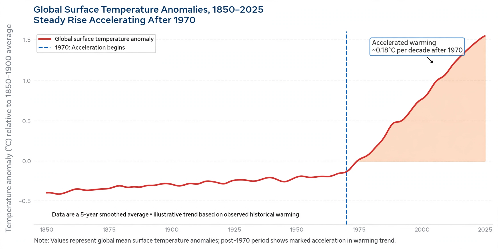
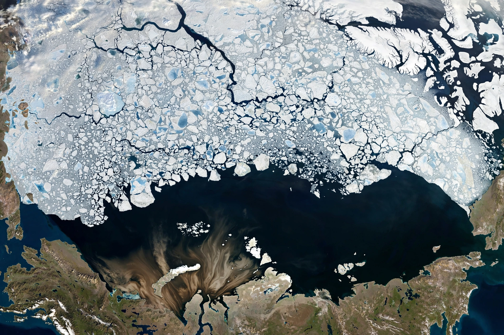

Global warming

Global warming is the ongoing rise in the average surface temperature of Earth's climate system, observed since the mid-20th century at a rate unprecedented in recent millennia. It is one aspect of Climate change, and is driven primarily by human emissions of greenhouse gases from burning fossil fuels, deforestation and industry.
Global surface temperature has risen by roughly 1.1–1.2 °C since the late 19th century, with most of the warming occurring since about 1970. The warming is not uniform: the Arctic has warmed several times faster than the global average, and land areas have warmed more than the oceans.
Observed changes
Each of the last four decades has been successively warmer than any decade preceding it since 1850. Satellite and surface records show corresponding changes: shrinking {L('Glacier','glaciers')} and {L('Ice_sheet','ice sheets')}, declining Arctic sea ice, {L('Sea_level_rise','rising sea levels')}, earlier spring seasons and shifts in the ranges of plant and animal species.

Scientists' confidence that humans are the dominant cause of recent warming rests on multiple lines of evidence: the measured increase in greenhouse gas concentrations, the fingerprint of warming (including cooling of the stratosphere while the surface warms), and climate models that reproduce observed warming only when human influences are included.
Causes
The principal cause is the Greenhouse effect: carbon dioxide from coal, oil and gas combustion is the largest single contributor, followed by methane from agriculture, waste and fossil fuel production; nitrous oxide; and fluorinated gases. Land-use change, especially Deforestation, adds further carbon dioxide and reduces the land carbon sink.
Natural factors such as changes in solar output and volcanic eruptions have contributed little to the trend over the past half-century and cannot explain the observed pattern of warming.
Future warming
The Intergovernmental Panel on Climate Change projects that future warming depends strongly on emissions choices. Scenarios limiting emissions sharply can hold warming near 1.5 °C, while high-emission pathways lead to warming of 3 °C or more by 2100, with further increases thereafter and long-lived consequences for seas and ice sheets.
Impacts grow with every increment of warming: more intense heatwaves, heavier precipitation in many regions, worsening droughts in others, {L('Ocean_acidification')}, and risks to food production, water supplies, health and ecosystems.
Responses
Responses divide into mitigation — cutting emissions through Renewable energy, energy efficiency, electrification and protecting carbon stores — and adaptation to changes that can no longer be avoided. The Paris Agreement commits nearly all countries to holding warming well below 2 °C while pursuing efforts toward 1.5 °C.
See also: Climate change · Greenhouse effect · Greenhouse gas · Sea level rise · Paris Agreement